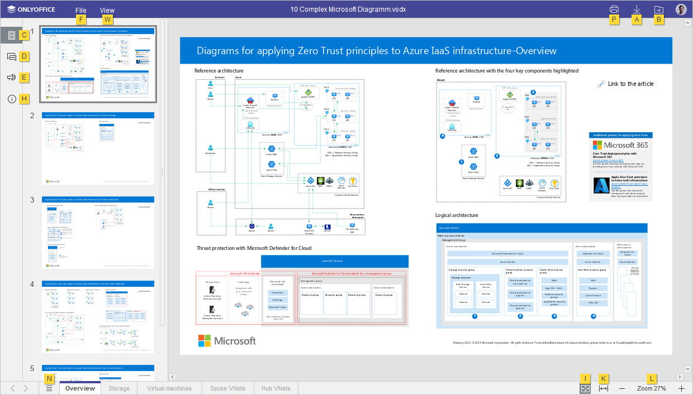
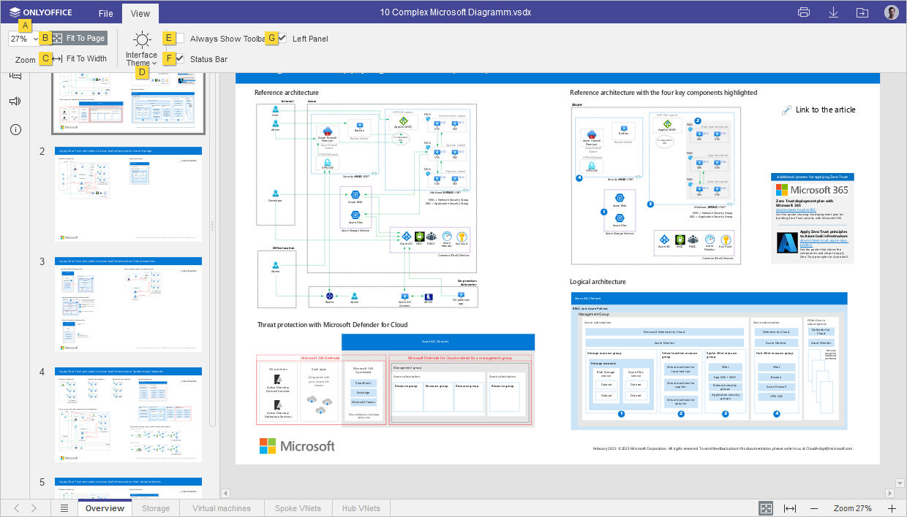

Prečice na tastaturi
Prečice na tastaturi za Key Tips
Koristite prečice na tastaturi za brži i jednostavniji pristup funkcijama Diagram Viewer bez korišćenja miša.
- Pritisnite Alt (Opciju za macOS) da uključite sve key tips za zaglavlje uređivača, gornju traku sa alatima, levu bočnu traku i statusnu traku.
-
Pritisnite slovo koje odgovara stavci koju želite da koristite. Dodatni key tips mogu se pojaviti u zavisnosti od tastera koji pritisnete. Prvi key tips se sakrivaju kada se pojave dodatni.
Na primer, da biste pristupili View kartici, pritisnite Alt (Opcija za macOS) da vidite sve primarne key tips.

Pritisnite slovo W da pristupite View kartici, i vidite sve dostupne prečice za ovu karticu.

Zatim pritisnite slovo koje odgovara stavci koju želite da podesite.
- Pritisnite Alt (Opcija za macOS) da sakrijete sve key tips ili pritisnite Escape da se vratite na prethodnu grupu key tips.
Pronađite najčešće prečice na tastaturi u listi ispod:
- Windows/Linux
- Mac OS
| Rad sa dijagramima | |||
|---|---|---|---|
| Otvori panel 'File' | Alt+F | ^ Ctrl+⌥ Option+F | Otvorite File panel da sačuvate, preuzmete, odštampate trenutni dijagram, pogledate njegove informacije, pristupite Help Centru Prikazivača Dijagrama ili naprednim podešavanjima. |
| Otvori panel 'Chat' (Online Editors) | Alt+Q | ^ Ctrl+⌥ Option+Q | Otvorite Chat panel u Online Editors i pošaljite poruku. |
| Štampaj dijagram | Ctrl+P | ^ Ctrl+P, ⌘ Cmd+P |
Odštampajte dijagram na jednom od dostupnih štampača ili ga sačuvajte kao fajl. |
| Sačuvaj kao... | Ctrl+⇧ Shift+S | ^ Ctrl+⇧ Shift+S, ⌘ Cmd+⇧ Shift+S |
Otvorite Sačuvaj kao... da sačuvate trenutno prikazani dijagram na hard disk vašeg računara u jednom od podržanih formata: VSDX, PDF, PDF/A, JPG, PNG. |
| Pređi na sledeću karticu | Ctrl+↹ Tab | ^ Ctrl+↹ Tab | Prebacite se na sledeću karticu fajla u Desktop Editors ili na sledeći tab pregledača u Online Editors. |
| Pređi na prethodnu karticu | Ctrl+⇧ Shift+↹ Tab | ^ Ctrl+⇧ Shift+↹ Tab | Prebacite se na prethodnu karticu fajla u Desktop Editors ili na sledeći tab pregledača u Online Editors. |
| Zatvori fajl | Ctrl+F4 | ⌘ Cmd+W | Zatvorite trenutni dijagram. |
| Resetuj ‘Zoom’ parametar | Ctrl+0 | ^ Ctrl+0 or ⌘ Cmd+0 | Resetuj ‘Zoom’ parametar trenutnog dijagrama na podrazumevanu vrednost. |
| Navigacija | |||
| Zoom In | Ctrl+Num+ or Ctrl++ (na glavnoj tastaturi) | ^ Ctrl++, ⌘ Cmd++ |
Uvećajte trenutno uređivani VSDX. |
| Zoom Out | Ctrl+- (na glavnoj tastaturi) | ^ Ctrl+-, ⌘ Cmd+- |
Umanjite trenutno uređivani VSDX. |